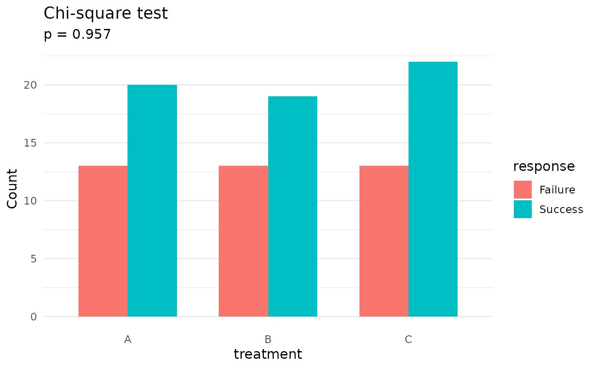

Tests the association between two categorical variables using chi-square,
Fisher's exact, or McNemar's test, with automatic method selection based
on expected cell frequencies when method = "auto".
Usage
quick_chisq(
data,
x_col,
y_col,
method = c("auto", "chisq", "fisher", "mcnemar"),
correct = NULL,
conf_level = 0.95,
alpha = 0.05
)
# S3 method for class 'quick_chisq_result'
plot(
x,
y = NULL,
plot_type = c("bar_grouped", "bar_stacked", "heatmap"),
show_p_value = TRUE,
p_label = c("p.format", "p.signif"),
palette = "qual_vivid",
...
)Arguments
- data
A data frame.
- x_col
Character. Column name for the first categorical variable (row variable).
- y_col
Character. Column name for the second categorical variable (column variable).
- method
One of
"auto"(default),"chisq","fisher","mcnemar".- correct
Logical or
NULL. Apply Yates' continuity correction?NULL(default) applies it automatically for 2×2 tables with expected frequencies between 5 and 10.- conf_level
Numeric. Confidence level for Fisher's exact test interval. Default
0.95.- alpha
Numeric. Significance level for
print()andsummary(). Default0.05.- x
A
quick_chisq_resultobject fromquick_chisq().- y
Ignored.
- plot_type
One of
"bar_grouped"(default),"bar_stacked", or"heatmap".- show_p_value
Logical. Annotate plot with p-value? Default
TRUE.- p_label
One of
"p.format"(numeric, default) or"p.signif"(stars).- palette
evanverse palette name. Default
"qual_vivid".NULLuses ggplot2 defaults.- ...
Additional arguments passed to the internal plotting backend.
Value
An object of class "quick_chisq_result" (invisibly) containing:
test_resultAn
htestobject from the testmethod_usedCharacter: human-readable test method label
contingency_tableObserved frequency table
expected_freqMatrix of expected frequencies
pearson_residualsPearson residuals matrix;
NULLfor Fisher/McNemareffect_sizeCramer's V and interpretation;
NULLwhen statistic is unavailabledescriptive_statsData frame with counts, proportions, and percents
auto_decisionList with method selection details
paramsList of input parameters
dataCleaned data frame used for the test (for
plot()method)
Use print(result) for a one-line summary, summary(result)
for full details, and plot(result) for a visualization.
Details
Auto method selection logic:
2×2 table with any expected frequency < 5: Fisher's exact test
>20\
2x2 table with 5 <= expected frequency < 10: Yates' correction applied
Otherwise: standard chi-square test
WARNING: "mcnemar" is ONLY for paired/matched data (e.g.,
before-after measurements on the same subjects). Do NOT use for independent
samples — use "chisq" or "fisher" instead.
Examples
set.seed(123)
df <- data.frame(
treatment = sample(c("A", "B", "C"), 100, replace = TRUE),
response = sample(c("Success", "Failure"), 100, replace = TRUE,
prob = c(0.6, 0.4))
)
result <- quick_chisq(df, x_col = "treatment", y_col = "response")
print(result)
#> Chi-square test | p = 0.9568 | 3x2 | V = 0.03 (negligible)
summary(result)
#>
#> ── Categorical Association Test ────────────────────────────────────────────────
#>
#> ── Parameters ──
#>
#> Test: Chi-square test
#> Variables: treatment × response
#> Table size: 3x2
#> alpha: 0.050
#>
#> ── Result ──
#>
#> ℹ p = 0.9568 (not significant at alpha = 0.05)
#>
#>
#> Pearson's Chi-squared test
#>
#> data: cont_table
#> X-squared = 0.088413, df = 2, p-value = 0.9568
#>
#>
#> ── Effect Size (Cramer's V) ──
#>
#> V: 0.03
#> Interpretation: negligible
#>
#> ── Observed Frequencies ──
#>
#>
#> Failure Success
#> A 13 20
#> B 13 19
#> C 13 22
#> ── Expected Frequencies ──
#>
#> Failure Success
#> A 12.87 20.13
#> B 12.48 19.52
#> C 13.65 21.35
#> ── Pearson Residuals ──
#>
#>
#> Failure Success
#> A 0.04 -0.03
#> B 0.15 -0.12
#> C -0.18 0.14
#> → |residual| > 2 indicates significant deviation from independence
#>
#> ── Method Selection ──
#>
#> Table size: 3x2
#> Total N: 100
#> Min expected freq: 12.48
#> Cells with freq < 5: 0
#> Decision: All expected frequencies adequate: using standard chi-square test
#>
plot(result)
#> ! Failed to load palette 'qual_vivid': Palette "qual_vivid" not found in any type.. Using defaults.
